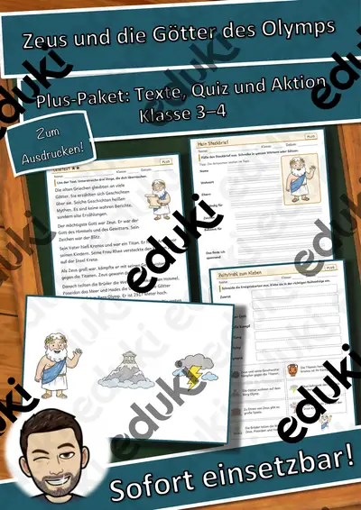

Artemis - Griechische Götter - Lückentext mit Wortspeicher

Materialpaket Griechische Götter - Lückentexte mit Wortspeicher, Plakate und Ausmalbilder

Zeus - Griechische Götter - Lückentext mit Wortspeicher

Hermes - Griechische Götter - Lückentext mit Wortspeicher

Demeter - Griechische Götter - Lückentext mit Wortspeicher
Persönlichkeiten-Werkstatt: Zeus – Steckbrief zum Lesen und Ausfüllen, Klasse 3–4 (kostenlos)

Persönlichkeiten-Werkstatt: Zeus – Plus-Paket mit Texten in 3 Stufen, Quiz und Aktion, Klasse 3–4

Tafelmaterial Ägypten
Keine Materialien gefunden – versuch einen anderen Suchbegriff oder Filter.